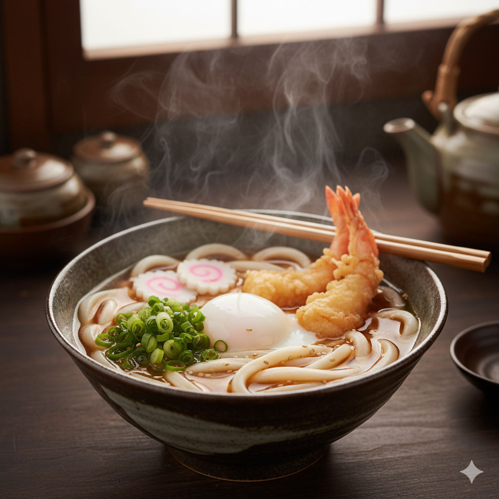

Home
Udon

Description
A classic udon noodle recipe features thick wheat noodles in a savory broth, with simple toppings like green onions. Below is an authentic, easy-to-follow method for Kake Udon (Udon Noodle Soup).
Ingredients
- 2 servings of udon noodle
- 3 cups dashi stock
- 2 tablespoons soy sauce
- 1 tablespoon mirin
- Thinly sliced green onions for garnis
- Optional: shichimi togarashi (Japanese chili powder), fish cake, other vegetables
Steps
- Prepare the Broth: In a medium saucepan, combine the dashi stock, soy sauce, and mirin. Bring to a gentle simmer, cover, and set aside.
- Cook Noodles: Bring a large pot of water to a boil. Add the udon noodles and reheat or cook per package instructions (usually 1–3 minutes). Drain in a colander and divide between serving bowls
- Assemble: Pour the hot broth over the noodles. Garnish with sliced green onion, shichimi togarashi if desired, and fish cake or veggie toppings as preferred.